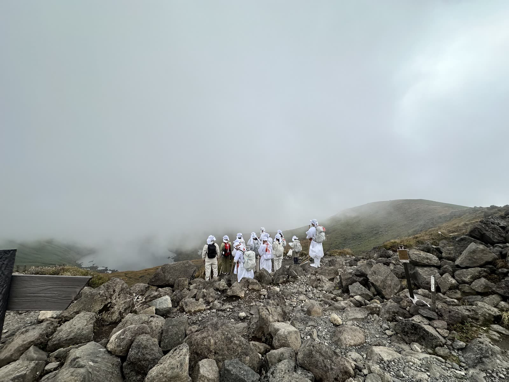

お知らせ
2026年の修行は、10月1日に無事に終わりました。
ご参加くださったみなさま、支えてくださったみなさま、ありがとうございました。
2027年も開催を予定しています。
日程・先達は現在調整中です。決まり次第、このページでお知らせいたします。
山伏修行体験とは
白装束に身を包み、先達（せんだつ）とともに鳥海山を歩く、一日の修行体験です。
金峰神社と奈曽の白滝での勤行にはじまり、鉾立登山口から山へ入ります。祈りとともに歩き、山を下りたあとは、直会（なおらい）でともに食事をいただきます。
山頂をめざすことが目的ではありません。山に入り、歩き、祈り、また里へ戻ってくる。その一日そのものが修行です。

これまでの歩み
2022年から毎年秋に催行しています。これまでは出羽三山・羽黒山伏の星野文紘（尚文）先達をお迎えし、毎年十数名から二十名ほどの方にご参加いただいてきました。
参加される方の多くが「また来たい」と、翌年も山に戻ってきてくださいます。
どなたでも
- 対象
- 5時間ほどの登山に耐えうる体力のある方。国籍・性別・宗教宗派は問いません。
- 勧誘
- 団体・宗教などへの勧誘は一切ありません。
- 開催時期
- 例年、秋（9月末〜10月はじめ）
お問い合わせ
鳥海山山伏修行 運営事務局
chokaisyugen@gmail.com